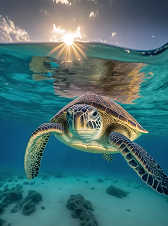
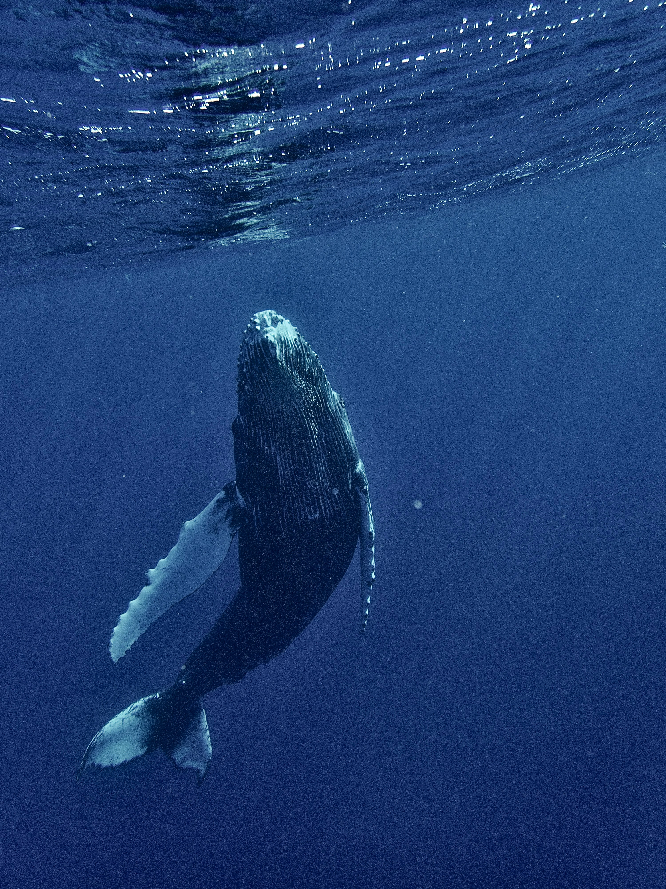
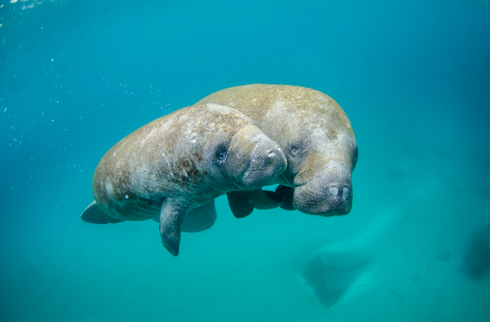
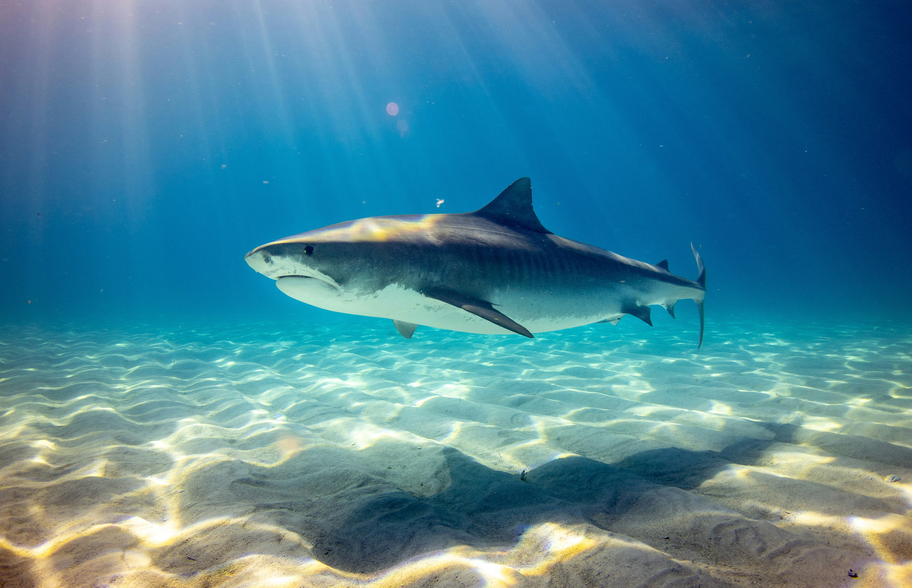
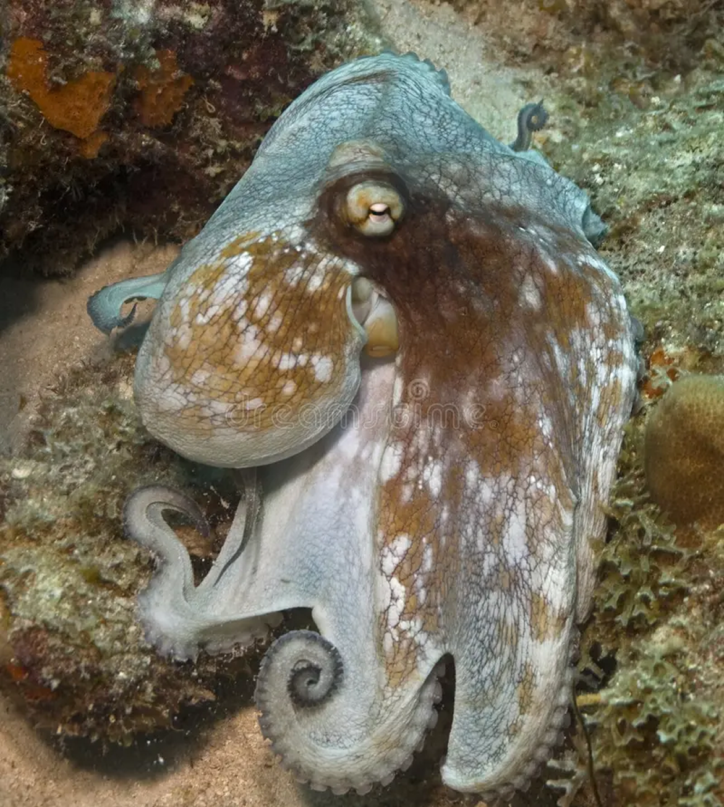
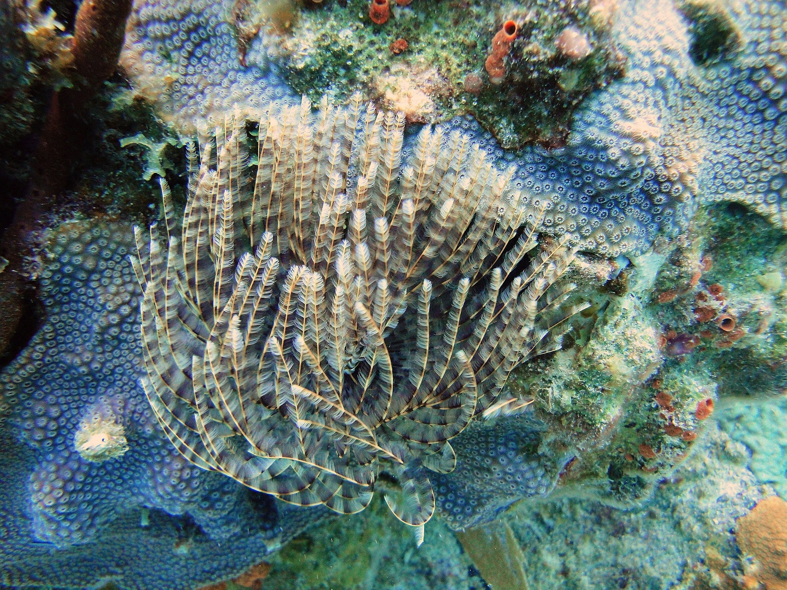
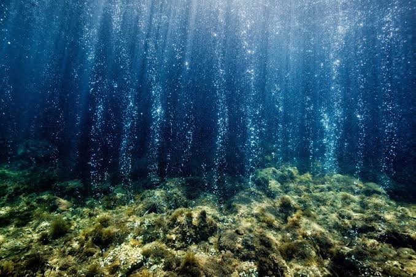
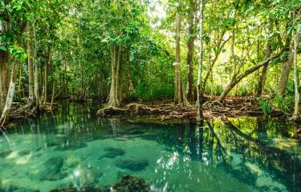

-
Nombre científico: Chelonia mydas
-
Estado de conservación: En Peligro
-
Importancia: Ayuda a mantener saludables las praderas marinas y participa en el ciclo de nutrientes.
CONOCE A QUIENES HABITAN EL OCÉANO
Tortuga Marina Verde

Ballena Jorobada

-
Nombre científico: Megaptera novaeangliae
-
Estado de conservación: Preocupación Menor
-
Importancia: Participa en el transporte de nutrientes y en el equilibrio de las redes alimentarias.
Manatí antillano

-
Nombre científico: Trichechus manatus
-
Estado de conservación: Vulnerable
-
Importancia: Controla la vegetación acuática y contribuye al funcionamiento de humedales y ecosistemas costeros.
Delfin Nariz de Botella

-
Nombre científico: Tursiops truncatus
-
Estado de conservación: Preocupación Menor
-
Importancia: Regula poblaciones de peces y otros organismos dentro de la cadena alimentaria.
Tiburón Martillo

-
Nombre científico: Sphyrna lewini
-
Estado de conservación: En Peligro Crítico
-
Importancia: Depredador importante para mantener el equilibrio de las poblaciones marinas.
Pulpo

-
Nombre científico: Octopus vulgaris
-
Estado de conservación: Preocupación Menor
-
Importancia: Regula poblaciones de crustáceos, moluscos y peces, y forma parte de la cadena alimentaria.
Cada especie cumple un papel importante en el equilibrio de nuestros océanos.
Los tres ecosistemas que sostienen el Caribe
Arrecifes de coral, praderas de pastos marinos y manglares funcionan como una sola unidad: lo que le pasa a uno afecta directamente a los otros dos.

Arrecifes de coral
Refugio y zona de cría para cientos de especies de peces e invertebrados. Los del Caribe colombiano (San Andrés y Providencia, Islas del Rosario, Varadero y el Tayrona) están entre los más afectados por el aumento de temperatura del mar.
Estado: crítico por blanqueamiento

Praderas de pastos marinos
Zonas de alimentación de tortugas y manatíes, y sumideros naturales de carbono ("carbono azul"). Muy sensibles a la sedimentación y a los nutrientes que llegan desde tierra firme por los ríos.
Estado: en retroceso por sedimentación

Manglares
Barrera natural contra huracanes y erosión costera, y hábitat de crianza para especies de interés pesquero. En zonas como Cispatá (Córdoba) enfrentan una fuerte presencia de residuos plásticos arrastrados por los ríos.
Estado: presión por microplásticos